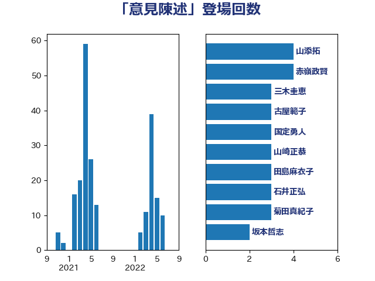

単語「意見陳述」

| 山添拓 | 日本共産党 | 4 回 |
| 赤嶺政賢 | 日本共産党 | 4 回 |
| 三木圭恵 | 日本維新の会 | 3 回 |
| 古屋範子 | 公明党 | 3 回 |
| 国定勇人 | 自由民主党 | 3 回 |
| 山崎正恭 | 公明党 | 3 回 |
| 田島麻衣子 | 立憲民主党 | 3 回 |
| 石井正弘 | 自由民主党 | 3 回 |
| 菊田真紀子 | 立憲民主党 | 3 回 |
| 坂本哲志 | 自由民主党 | 2 回 |
| 山下芳生 | 日本共産党 | 2 回 |
| 山下雄平 | 自由民主党 | 2 回 |
| 朝日健太郎 | 自由民主党 | 2 回 |
| 竹内真二 | 公明党 | 2 回 |
| 串田誠一 | 日本維新の会 | 1 回 |
| 井上哲士 | 日本共産党 | 1 回 |
| 伊佐進一 | 公明党 | 1 回 |
| 伊藤孝恵 | 国民民主党 | 1 回 |
| 伊藤渉 | 公明党 | 1 回 |
| 吉田宣弘 | 公明党 | 1 回 |
| 塩川鉄也 | 日本共産党 | 1 回 |
| 大西健介 | 立憲民主党 | 1 回 |
| 安江伸夫 | 公明党 | 1 回 |
| 小林鷹之 | 自由民主党 | 1 回 |
| 小沼巧 | 立憲民主党 | 1 回 |
| 山田賢司 | 自由民主党 | 1 回 |
| 岩渕友 | 日本共産党 | 1 回 |
| 岸田文雄 | 自由民主党 | 1 回 |
| 川合孝典 | 国民民主党 | 1 回 |
| 川田龍平 | 立憲民主党 | 1 回 |
| 斎藤アレックス | 国民民主党 | 1 回 |
| 新藤義孝 | 自由民主党 | 1 回 |
| 早稲田ゆき | 立憲民主党 | 1 回 |
| 杉本和巳 | 日本維新の会 | 1 回 |
| 松沢成文 | 日本維新の会 | 1 回 |
| 柚木道義 | 立憲民主党 | 1 回 |
| 浅田均 | 日本維新の会 | 1 回 |
| 浜地雅一 | 公明党 | 1 回 |
| 浜田聡 | NHK党 | 1 回 |
| 熊谷裕人 | 立憲民主党 | 1 回 |
| 田村智子 | 日本共産党 | 1 回 |
| 田村貴昭 | 日本共産党 | 1 回 |
| 畦元将吾 | 自由民主党 | 1 回 |
| 石川博崇 | 公明党 | 1 回 |
| 石橋通宏 | 立憲民主党 | 1 回 |
| 福島みずほ | 社会民主党 | 1 回 |
| 稲津久 | 公明党 | 1 回 |
| 笠井亮 | 日本共産党 | 1 回 |
| 米山隆一 | 立憲民主党 | 1 回 |
| 紙智子 | 日本共産党 | 1 回 |
| 舟山康江 | 国民民主党 | 1 回 |
| 里見隆治 | 公明党 | 1 回 |
| 金村龍那 | 日本維新の会 | 1 回 |
| 金田勝年 | 自由民主党 | 1 回 |
| 鎌田さゆり | 立憲民主党 | 1 回 |
| 長友慎治 | 国民民主党 | 1 回 |
| 階猛 | 立憲民主党 | 1 回 |
| 青木一彦 | 自由民主党 | 1 回 |
| 青柳陽一郎 | 立憲民主党 | 1 回 |
| 馬場成志 | 自由民主党 | 1 回 |
| 高木かおり | 日本維新の会 | 1 回 |
| 高橋千鶴子 | 日本共産党 | 1 回 |